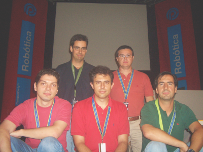

|
Mesa Redonda: "Robótica. Cómo iniciarse...y continuar". Área de CampusBot. Campus Party. Valencia. 2005 |
|
 Fila inferior, de izquierda a derecha: Iván González, Julio Pastor y Alejandro Alonso. Fila superior: Juan González y Arturo Morgado |
Título: “Robótica. Cómo iniciarse... y continuar”.
Duración: 1 hora
Evento: Área de CampusBot. Campus Party 2005.
Organiza: Alejandro Alonso Puig. Coordinador del área de Campus Bot.
Lugar: Feria de Valencia.
Fecha: 30 de Julio de 2005
Participantes:
Moderador: Alejandro Alonso Puig. (Quark Robotics). Coordinador del área de CampusBot
Julio Pastor. Profesor en la Universidad de Alcalá (UAH). Organizador de Alcabot e Hispabot
Arturo Morgado Estévez. Subdirector de Investigación de la Escuela de Ingeniería de la Universidad de Cádiz. UCA
Iván González Martínez. Profesor ayudante en la Escuela Politécnica Superior de la Universidad Autónoma de Madrid (UAM)
Juan González Gómez , Profesor ayudante en la Escuela Politécnica Superior, de la Universidad Autónoma de Madrid (UAM)
Con esta mesa redonda se cerraron las actividades de la CampusBot. Sin duda, la CampusBot responde por sí misma a la primera pregunta formulada en esta mesa redonda: ¿Cómo iniciarse en la robótica?. La mejor manera, a mi modo de verlo es participando en un evento como éste. Asistiendo a un taller de iniciación a la robótica se aprende a construir y programar tu primer robot. Se pierde el miedo y sobre todo empiezan a aparecer ideas sobre la cantidad de cosas nuevas que se pueden crear a partir de esos conocimientos.
La robótica es muy atractiva y poco a poco se va difundiendo más entre institutos y universidades, que ofrecen asignaturas optativas sobre robótica práctica, en la que los alumnos construyen su primer robot. En esta mesa los participante contaron sus experiencias personales sobre cómo se iniciaron en este apasionante mundo. Pero, una vez que te has iniciado, ¿Cuál es el siguiente paso?
En la mayoría de las universidades están apareciendo asociaciones de robótica. Ese es sin duda el siguiente paso: apúntate a una de ellas. Allí conocerás gente y sobre todo podrás organizar eventos relacionados con la robótica, como concursos o seminarios. ¿No hay asociación en tu Universidad? ¿Por qué no la creas tú? :-) Arturo Morgado nos contó cómo recientemente se ha creado la Asociación de Microbótica de la Universidad de Cádiz (AMUCA), cuyo presidente es Jose Pichardo, un alumno entusiasta de la robótica.
Para desarrollar las habilidades en robótica nada mejor que participar en los concursos que se celebran a nivel nacional. Por ejemplo los organizados en la propia CampusBot o los de Hispabot, en la que se puede participar en las categorías de Sumo, Rastreadores y Laberinto, organizado y promovido por Julio Pastor, y celebrado en la Universidad de Alcalá de Henares. Otros concursos se celebran en Mataró, la Universidad Politécnica de Cataluña (UPC), Valladolid (Robolid), la Escuela de Industriales de la Universidad Politécnica de Madrid (UPM), la Universidad Rey Juan Carlos, etc.
Otra posibilidad muy interesante, de la que Julio Pastor nos habló en su conferencia, es participar en la Eurobot, que se celebra cada año en Francia. Cada año se propone un reto y los participantes tienen que aplicar todo su ingenio y creatividad para resolverlo. Nos sorprendió ver que muchas veces los ganadores no eran los que más presupuesto tenían sino los que diseñaban las soluciones más ingeniosas.
Iván gonzález y Juan González nos contaron sus experiencias personales, cómo se iniciaron en este mundo y cómo actualmente están colaborando con Guillermo González De Rivera en la asignatura de Robótica en la Universidad Autónoma de Madrid.
¿Y qué pasa en el ambiente laboral? ¿Se puede vivir de la robótica? Dejando al margen la robótica industrial que seguirá creciendo año tras año, Alejandro Alonso apuntó unos datos muy interesantes sobre las expectativas que se tienen de la robótica. Y son muy buenas. Lo mismo que ha ocurrido un boom de Internet, de los ordenadores y de las comunicaciones se espera un espectacular crecimiento en la robótica, pero no exclusivamente de la robótica industrial, que seguirá avanzado, sino en robótica de consumo. Las empresas Japonesas están apostando muy fuerte en este campo. Y aunque al día de hoy aquí en España casi no existen empresas en las que uno pueda ejercer su labor profesional en este campo, sí es previsible que sea así en un futuro... ¿Te gustaría vivir de la robótica? ¿No has pensado en montar tu propia empresa para situarte estratégicamente en este mercado emergente? ;-)
Concurso internacional EUROBOT.
Concurso nacional de robótica Hispabot.
Concurso nacional de robots “Ciutat de Mataró”
Concurso nacional de robótica AESS Estudiants
Concurso nacional de robótica Robolid
Concurso Cybertech
Concurso Robocampeones.
Asociación de Robótica Microbótica de la Univesidad de Cádiz, AMUCA.
En este enlace puedes acceder al cuaderno de bitácora completo.
A Alejandro Alonso Puig, por la estupenda organización de la CampusBot y por invitarme a participar en esta mesa redonda. ¡Muchas gracias!
21/Septiembre/2005: Publicada información en esta web